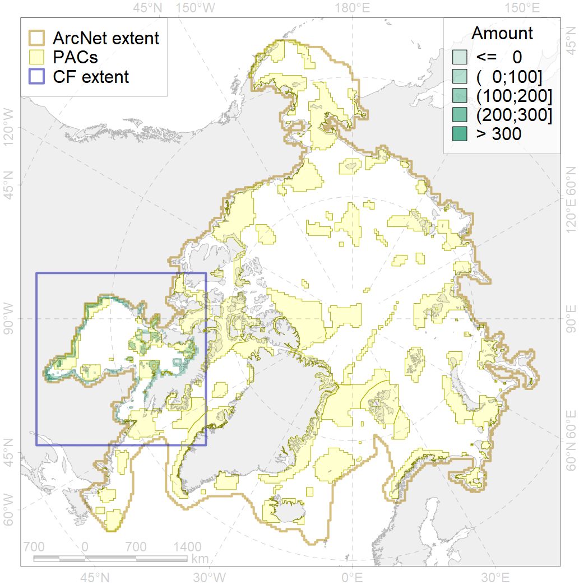
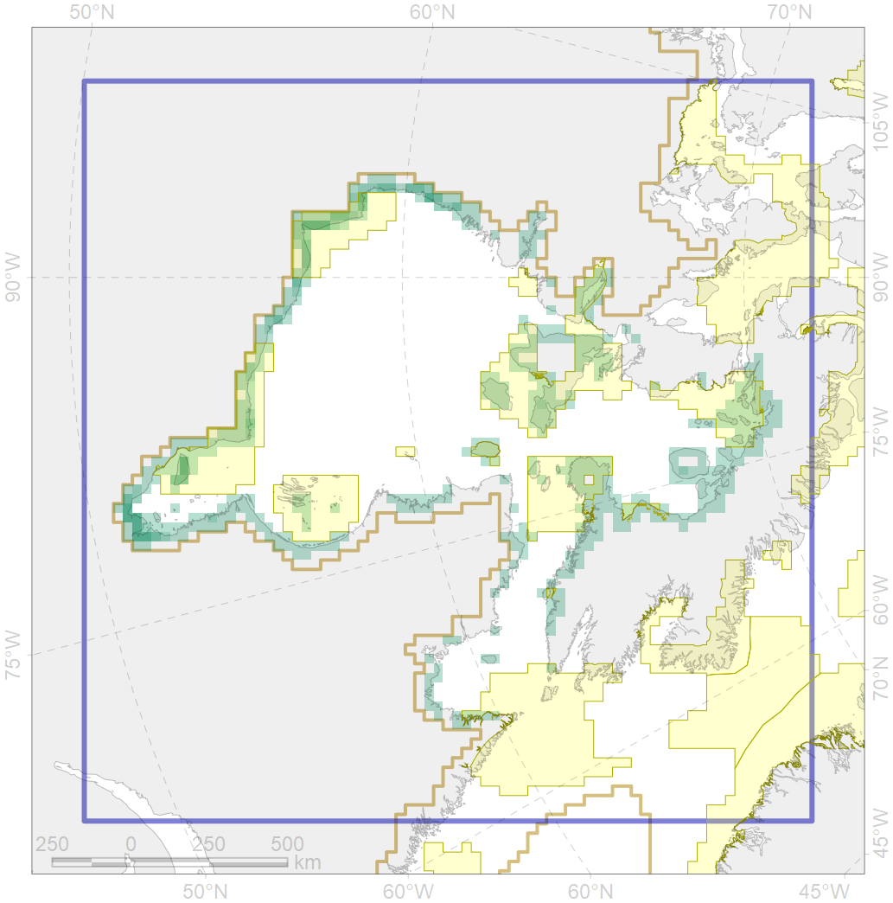

8037

| CF code | 8037 |
| CF name | Salt marshes of the Hudson Bay LME |
| Time Period | 2014-2018 |
| Source(s) | Map prepared by F. Romanenko for PAMPAN specifically |
| Seasonality | 6-9 |
| Depth Horizon | 0 |
| Methodology | remote sensing, field data |
| Use Restrictions | Map prepared by F. Romanenko for PAMPAN specifically |
| Author Name | F. Romanenko |
| Notes | |
| Scenario’s Target | 0.3 |
| Target Achievement | 0.422 (Scenario: 140.5%) |
| PAC | Share of the Total Amount within the PAC | Share of the Target Achievement for the ArcNet | PAC’s Contribution to the Target Achievement |
|---|---|---|---|
| 66 | 1.1%1.2% | 3.2%3.4% | 2.3%2.4% |
| 67 | 4.1%4.2% | 13.0%13.3% | 9.2%9.5% |
| 69 | 22.9%22.9% | 71.1%71.1% | 50.5%50.5% |
| 70 | 13.9%14.5% | 41.7%41.8% | 29.6%29.7% |
| 71 | 0.0% | 0.1% | 0.0% |
| 72 | 0.9%1.2% | 1.6%1.9% | 1.1%1.3% |
| 73 | 1.1%1.1% | 3.4%3.4% | 2.4%2.4% |
| 74 | 0.1%0.7% | 0.4%2.2% | 0.3%1.6% |
| 75 | 0.0%0.0% | 0.0%0.1% | 0.0%0.0% |
| 76 | 0.0%0.0% | 0.0%0.0% | 0.0%0.0% |
| inner | 44.2%45.7% | 134.6%137.4% | 95.7%97.6% |
| outer | 36.0%46.4% | 5.9%22.6% | 4.2%16.1% |
| † supplement values are for area consistence whereas principal values are for Accenter compatible gridded stats |